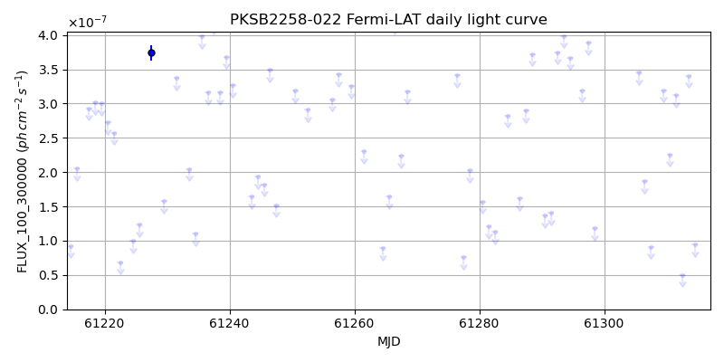
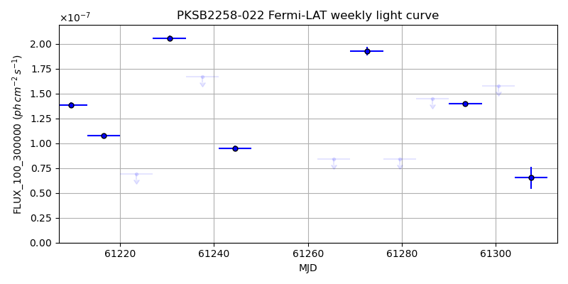
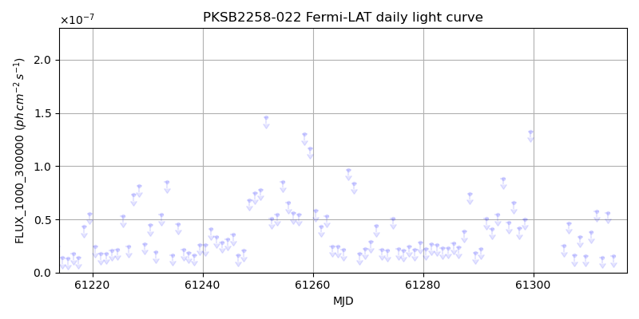
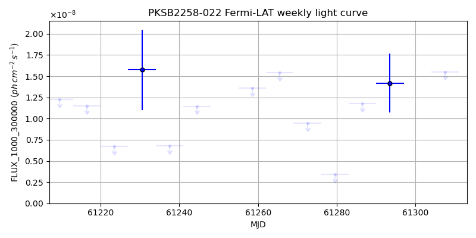

LAT Lightcurve site: https://fermi.gsfc.nasa.gov/ssc/data/access/lat/msl_lc/source/PKS_B2258-022
NED: Query
Time of last update of this page: UT: 2026-10-02 15:31 (MJD: 61315.647)
| Property | Value |
|---|---|
| R.A. | 23:01:07.92 |
| Dec. | -1:58:04.8 |
| z | 0.777 |
| 3FGL SpectrumType | |
| 3FGL PL Index | -1.00 |
| 3FGL Flux_100_300000 | -1.00e+00 |
| 3FGL Flux_1000_300000 | -1.00e+00 |
| 3FGL Flux >200 GeV | -1.00e+00 |
| 3FGL Extrap. Crab >200 GeV | -1.00 |
| 3FGL Flux After EBL Absorption >200GeV | -1.00e+00 |
| 3FGL EBL Crab Fraction >200GeV | -1.00 |

| MJD | dMJD | Flux | dFlux | Frac3FGL | FracCrab>200GeV | EBLFracCrab>200GeV |
|---|---|---|---|---|---|---|
| 61310.50 | 0.50 | 2.26e-07 | 0.00e+00 | 0.00 | 0.00 | -0.00 |
| 61311.50 | 0.50 | 3.13e-07 | 0.00e+00 | 0.00 | 0.00 | -0.00 |
| 61312.50 | 0.50 | 5.01e-08 | 0.00e+00 | 0.00 | 0.00 | -0.00 |
| 61313.50 | 0.50 | 3.41e-07 | 0.00e+00 | 0.00 | 0.00 | -0.00 |
| 61314.50 | 0.50 | 9.43e-08 | 0.00e+00 | 0.00 | 0.00 | -0.00 |

| MJD | dMJD | Flux | dFlux | Frac3FGL | FracCrab>200GeV | EBLFracCrab>200GeV |
|---|---|---|---|---|---|---|
| 61279.50 | 3.50 | 8.40e-08 | 0.00e+00 | 0.00 | 0.00 | -0.00 |
| 61286.50 | 3.50 | 1.45e-07 | 0.00e+00 | 0.00 | 0.00 | -0.00 |
| 61293.50 | 3.50 | 1.40e-07 | 0.00e+00 | 0.00 | 0.00 | -0.00 |
| 61300.50 | 3.50 | 1.58e-07 | 0.00e+00 | 0.00 | 0.00 | -0.00 |
| 61307.50 | 3.50 | 6.53e-08 | 0.00e+00 | 0.00 | 0.00 | -0.00 |

| MJD | dMJD | Flux | dFlux | Frac3FGL | FracCrab>200GeV | EBLFracCrab>200GeV |
|---|---|---|---|---|---|---|
| 61310.50 | 0.50 | 3.77e-08 | 0.00e+00 | 0.00 | 0.00 | -0.00 |
| 61311.50 | 0.50 | 5.79e-08 | 0.00e+00 | 0.00 | 0.00 | -0.00 |
| 61312.50 | 0.50 | 1.43e-08 | 0.00e+00 | 0.00 | 0.00 | -0.00 |
| 61313.50 | 0.50 | 5.63e-08 | 0.00e+00 | 0.00 | 0.00 | -0.00 |
| 61314.50 | 0.50 | 1.55e-08 | 0.00e+00 | 0.00 | 0.00 | -0.00 |

| MJD | dMJD | Flux | dFlux | Frac3FGL | FracCrab>200GeV | EBLFracCrab>200GeV |
|---|---|---|---|---|---|---|
| 61279.50 | 3.50 | 3.40e-09 | 0.00e+00 | 0.00 | 0.00 | -0.00 |
| 61286.50 | 3.50 | 1.18e-08 | 0.00e+00 | 0.00 | 0.00 | -0.00 |
| 61293.50 | 3.50 | 1.42e-08 | 0.00e+00 | 0.00 | 0.00 | -0.00 |
| 61300.50 | 3.50 | 2.45e-08 | 0.00e+00 | 0.00 | 0.00 | -0.00 |
| 61307.50 | 3.50 | 1.55e-08 | 0.00e+00 | 0.00 | 0.00 | -0.00 |
--------------------------------------------------------- Using user-supplied coords: 23:01:07.92 -1:58:04.8 2000 --------------------------------------------------------- FLWO UT night of: 2026-10-03 Local Sid. @ Midnight: 00:24 Sunset (-15.0) (local, UT): 19:14 02:14 Sunrise (-15.0) (local, UT): 05:12 12:12 Moonrise (local, UT): 22:48 05:48 Moonset (local, UT): Moon phase: 0.53 --------------------------------------------------------- AzTime LSID UT Obj_el Obj_az Mn_el Mn_az Sep. --------------------------------------------------------- 19:14 19:37 02:14 31.0 114.5 -28.5 20.1 107.7 19:44 20:07 02:44 36.7 120.4 -26.2 26.7 108.1 20:14 20:37 03:14 42.0 127.3 -23.2 32.8 108.4 20:44 21:07 03:44 46.8 135.4 -19.6 38.5 108.8 21:14 21:37 04:14 50.9 145.0 -15.7 43.6 109.2 21:44 22:07 04:44 54.1 156.2 -11.3 48.4 109.5 22:14 22:37 05:14 56.0 168.9 -6.5 52.7 109.9 22:44 23:07 05:44 56.5 182.4 -0.8 56.7 110.2 23:14 23:37 06:14 55.5 195.7 3.8 60.4 110.5 23:44 00:07 06:44 53.1 208.0 9.1 63.9 110.8 00:14 00:38 07:14 49.6 218.6 14.6 67.1 111.1 00:44 01:08 07:44 45.2 227.6 20.3 70.2 111.4 01:14 01:38 08:14 40.2 235.3 26.1 73.1 111.7 01:44 02:08 08:44 34.7 241.8 32.1 76.0 111.9 02:14 02:38 09:14 29.0 247.4 38.1 78.8 112.2 02:44 03:08 09:44 23.0 252.5 44.2 81.7 112.4 03:14 03:38 10:14 16.8 257.0 50.3 84.8 112.6 03:44 04:08 10:44 10.5 261.3 56.5 88.1 112.8 04:14 04:38 11:14 4.3 265.3 62.7 91.9 113.0 04:44 05:08 11:44 -1.3 269.3 68.9 96.9 113.2 05:12 05:37 12:12 -8.4 273.0 74.7 103.8 113.4 --------------------------------------------------------- Dark hours >55 deg.: 0.87 srcstart (UT): 2026-10-03 04:55 srcend (UT): 2026-10-03 05:48